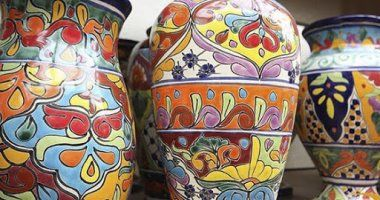

¡Artesanias en ceramica, hechas a mano, con mucho amor para ustedes!.
Historia de la Artesania.
Alejandra Molina - 23/07/24

Las artesanías de Argentina son muy hermosas. Cada región socioculturalmente hablando, cuenta con diversos objetos de variada forma colores, materiales, y usos; cada uno de estos se construyen con diferentes técnicas dependiendo del material que se use y la región en que se lo construya.
Por lo tanto una artesanías de argentina son hechos por una cultura extraordinaria, fabricados a mano o con herramientas artesanales, la misma se basa en los elementos necesarios para ser un hecho folclórico (funcional, vigente, anónimo, empírico, etc.)
La cerámica es un lienzo versátil y encantador que ofrece infinitas posibilidades creativas. Desde tazas y platos de cerámica hasta macetas y jarrones, cualquier pieza de cerámica puede convertirse en una obra de arte con un poco de imaginación y técnica.
Esta actividad no solo permite expresar creatividad y habilidades artísticas, sino que también proporciona un efecto terapéutico y relajante, ideal para reducir el estrés. Además, las piezas pintadas a mano pueden ser regalos personalizados y significativos, y la técnica de pintura en cerámica es duradera, asegurando que los diseños se mantengan vibrantes y atractivos a lo largo del tiempo.
Hoy en día, la cerámica sigue siendo una forma de expresión artística muy valorada en Argentina. Los artistas y artesanos de cerámica contemporánea exploran nuevas técnicas y materiales, utilizando la cerámica como un medio para la expresión personal y la reflexión cultural.
Entre los materiales que se utilizan en la cerámica contemporánea en Argentina se encuentran la arcilla, el vidrio, metales y resinas, creando piezas de arte únicas en texturas y colores.